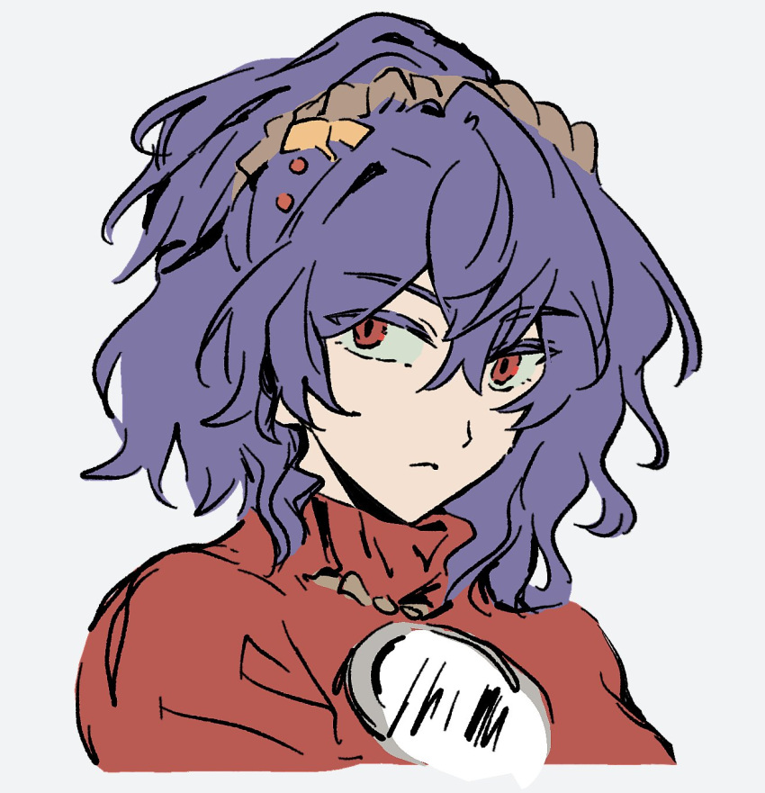

Created by Nymyh - License AGPL-3.0 | Content License | GitHub Repository

Hello, I'm the creator of this website. To be honest, I don't have much to say about myself. As I mentioned on the homepage, I should probably explain a little about who I am, but honestly, I don't think that's appropriate for privacy reasons.
So, I'll just share some generic and general information:
I'm a DIY/Amateur developer. I'm not entirely sure what the correct term for this is. I work with HTML, CSS, and C#, meaning I develop websites and software. The website you're currently browsing is an example of my work.
Things I like:
Things I dislike:
I admit that I'm a pragmatist. I understand that I sometimes have to use proprietary software and services, and I don't necessarily see a problem with that. However, if a free or open-source alternative exists, I prefer to use it.
Additionally: I don't have any contact methods through messaging platforms, social networks, or communication protocols.
I speak Spanish, English, and a little Italian.
And that's about it. I might edit this page at some point in the future, but for now, that's all.
Thank you for reading.